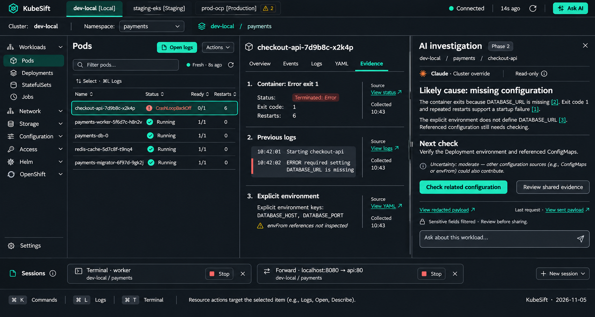
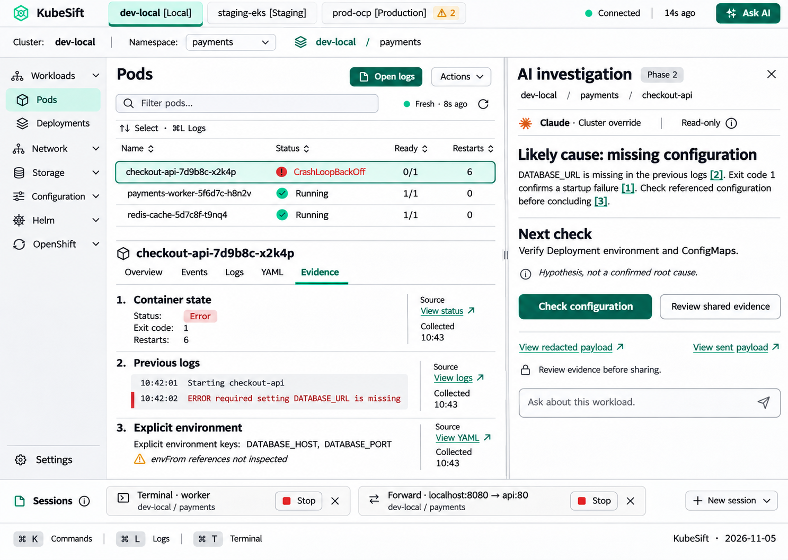

The selected layout combines the resource explorer and evidence-based right-side AI panel. AI remains Phase 2. These static references guide visual implementation; behavior is owned by the UX specification.
Wide layout · Dark

Laptop layout · Light

Reference limitations
Both themes support either layout. Generated dimensions are illustrative, not breakpoint specifications. Final code must validate accessibility and resizing. In the laptop image, exit code 1 indicates unsuccessful termination; final AI copy should say it supports, rather than confirms, the startup-failure hypothesis. Mock alert counts are fictional and require real observations in the application.
Generated with the built-in image tool from the selected explorer and AI references. The wide prompt combined graphite explorer navigation, explicit cluster identity, user labels, keyboard selection and payload inspection; the laptop prompt preserved the right-side AI while stacking list/detail and switching to light tokens. Requested framing: 1920 × 1080 and 1440 × 900 respectively.